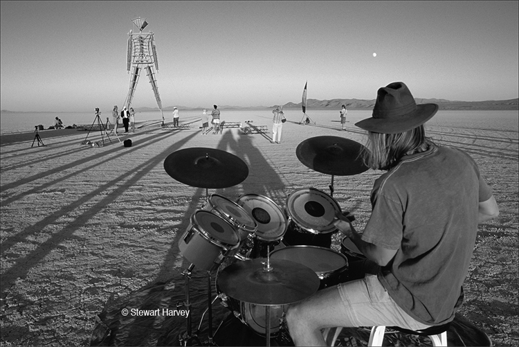
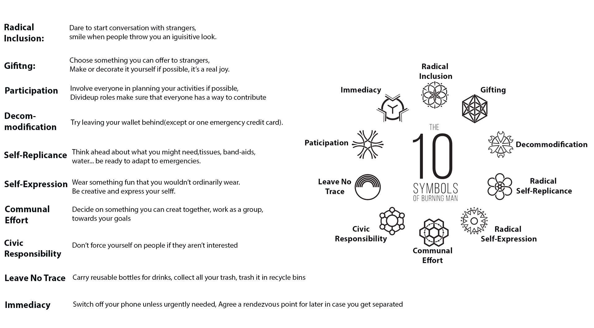

<!DOCTYPE html>
<html lang="en">
<head>
    <meta charset="UTF-8">
    <meta http-equiv="X-UA-Compatible" content="IE=edge">
    <meta name="viewport" content="width=device-width, initial-scale=1.0">
    <title>Document</title>
</head>
<body>
    
</body>
</html>
<!DOCTYPE html>
<html lang="en">
    <head>
        <!-- Кодировка веб-страницы -->
        <meta charset="utf-8">
        <!-- Настройка viewport -->
        <meta name="viewport" content="width=device-width, initial-scale=1, shrink-to-fit=no">

        <title>CWD FINAL</title>

        <link href="../main.css" rel="stylesheet">
        <script src="https://ajax.googleapis.com/ajax/libs/jquery/3.6.0/jquery.min.js"></script>
        <script src="../main.js"></script>

    </head>
    <body id="bodyHistory">
        <!-- section for main video on top of page -->
        <section id="top">
            <h1>CITY IN THE<span> DESERT</span></h1>
        </section>

        <header id="header">
            <div>
                <a href="../index.html"><h1>BURNING MAN</h1></a>
            </div>

            <div>
                <button id="menuOpen"></button>
            </div>
            <!-- <a href="https://www.flaticon.com/free-icons/menu" title="menu icons">Menu icons created by Freepik - Flaticon</a> -->
        </header>


        <aside id="asideNav" class="">
            <div>
                <button id="menuClose"></button>
            </div>
            <div id="list">
                <p>PAGES</p>
                <ul>
                    <li><a href="../index.html">Main page</a></li>
                    <li><a href="">page 2</a></li>
                    <li><a href="history.html">History</a></li>
                    <li><a href="gallery.html">Gallery</a></li>
                    <li><a href="about-us.html">About Us</a></li>
                    <li><a href="contact-us.html">Contact-us</a></li>
                    <li><a href="">page 7</a></li>
                    <li><a href="">page 8</a></li>
                    <li><a class="activeLink" href="references.html">References</a></li>
                </ul>
            </div>
            <!-- <a href="https://www.flaticon.com/free-icons/cancel" title="cancel icons">Cancel icons created by torskaya - Flaticon</a> -->
        </aside>

        <main>
            <section id="general">
                <a href="https://burningman.org/"></a>
            </section>
            <h1 class="mainTitle">The History of Burning Man Festival: Igniting Creativity and Community</h1>
            
            <article class="historyMiddleArticles">
                <p>
                    The Burning Man Festival is a one-of-a-kind event that has captivated the imagination of millions around the world. 
                    It is a unique gathering of artists, dreamers, and free spirits in the heart of Nevada's Black Rock Desert. 
                    This page delves into the rich history of Burning Man, 
                    exploring its origins, evolution, and the profound impact it has had on art, self-expression, and communal living.
                </p>
            </article>
            <div class="historyArticleContainer">
                <article class="historyArticle">
                    <h1 class="title">The foundation of an extraordinary journey.</h1>
                    <p>
                        The roots of Burning Man can be traced back to the mid-1980s when a small group of friends in San Francisco decided to gather on Baker Beach to commemorate the summer solstice. 
                        Led by Larry Harvey and Jerry James, they erected a wooden effigy that they dubbed "The Man" and set it ablaze. 
                        This simple act of self-expression and communal celebration laid the foundation for what would become the Burning Man Festival.
                    </p>
                    <p>
                        As word spread about this unique gathering, more individuals began to participate, leading to challenges with local authorities. 
                        In 1990, the event was relocated to the vast and desolate Black Rock Desert in Nevada. 
                        This move not only resolved logistical concerns but also provided an expansive canvas for creativity to thrive.
                    </p>
                </article>
                
            </div> 
            <section id="upButton">
                <a href="#top">
                    <div>
                        
                    </div>
                </a>
            </section>
            <h1 class="mainTitle x3">Time Line</h1>
            <section class="timeLineContainer">
                <div> <p>1986</p> </div>
                <p>The first Burning Man event takes place on Baker Beach in San Francisco. 
                    It is a spontaneous gathering of friends, 
                    with Larry Harvey and Jerry James constructing and burning a wooden figure. 
                    The event is initially named "Burning Man" and serves as a small-scale ritualistic act of self-expression and community.
                </p>
                <div> <p>1990</p></div>
                <p>
                    Due to the growing number of participants and concerns about safety and environmental impact, 
                    the event moves to the Black Rock Desert in Nevada. The vast and remote desert provides a blank canvas for creativity and self-expression. Black Rock City, 
                    a temporary community, is established, with participants building a vibrant and interactive city in the desert.
                </p>
                <div> <p>1997</p> </div>
                <p>
                    The first "Temple" is built at Burning Man, designed by David Best. 
                    The Temple becomes a sacred space for personal reflection, remembrance, and emotional healing. Over the years, 
                    the Temple has evolved into a central and deeply meaningful element of the Burning Man experience.
                </p>
                <div> <p>2004</p></div>
                <p>
                    To manage the increasing scale and complexity of the event, 
                    the Burning Man organization establishes the Black Rock City Department of Public Works (DPW). DPW is responsible for constructing and maintaining the infrastructure, 
                    including roads, theme camps, and art installations, 
                    to ensure a functional and immersive experience for participants.
                </p>
                <div> <p>2007</p></div>
                <p>
                    The Burning Man organization introduces the Ten Principles, which outline the core values and ethos of the event. 
                    These principles include Radical Inclusion, Gifting, Decommodification, Radical Self-reliance, Radical Self-expression, Communal Effort, Civic Responsibility, Leaving No Trace, Participation, and Immediacy. 
                    The principles serve as a guiding framework for participants to create an inclusive, collaborative, and transformative experience.
                </p>
                <div> <p>2010</p></div>
                <p>
                    To extend the cultural impact of Burning Man beyond the annual event, the Burning Man organization forms the nonprofit Burning Man Project. 
                    The Burning Man Project aims to support and promote Burning Man's principles and values throughout the year, fostering creativity, civic engagement, and cultural development.
                </p>
                <div> <p>2013</p></div>
                <p>
                    Burning Man reaches its attendance peak, with over 68,000 participants. 
                    The event continues to attract a diverse community of artists, performers, builders, and enthusiasts from around the world, 
                    contributing to the rich tapestry of art, music, workshops, and interactive experiences that define Burning Man.
                </p>
                <div> <p>2020</p></div>
                <p>
                    In response to the COVID-19 pandemic, which prevented the physical gathering of participants, Burning Man transitions to a virtual event called "Burning Man Multiverse." 
                    The Multiverse offers a digital platform for participants to connect, create, and engage remotely, showcasing innovative digital art installations, virtual theme camps, and interactive experiences.
                </p>
                
            </section>
            <h1 class="mainTitle x1"><a href="https://burningman.org/timeline/" style="color: white;text-decoration: underline;">Official Extended burningman timeline</a></h1>
            <div class="imageContainer">
                <h1 class="mainTitle">Ten Principles</h1>
                <article class="historyMiddleArticles">
                    <p>
                    Central to the ethos of Burning Man are the Ten Principles, 
                    which were established in 2004. These principles serve as a guiding philosophy for participants.
                    </p>
                </article>
                <div class="imageBackground"></div>
                <a class="imageReference" href="https://dribbble.com/shots/14081723-The-10-Symbols-of-Burning-Man">The-10-Symbols-of-Burning-Man originally by Wick</a>
            </div>
            
            <h1 class="mainTitle">Artistic Expression and Mutant Vehicles</h1>
            <div class="flexBox">
                <article class="historyArticle">
                    <p>
                        At the core of Burning Man is its vibrant art scene. The event provides a blank canvas for artists to unleash their creativity and push the boundaries of self-expression. 
                        The desert landscape becomes a playground for massive, interactive art installations, sculptures, 
                        and structures that often defy conventional expectations.
                        Immersive art experiences come to life as participants engage with awe-inspiring sculptures, mesmerizing outfits, and art cars that traverse the playa.
                    </p>
                </article>
                <article class="historyArticle">
                    <p>
                        One of the most iconic features of Burning Man is its fleet of mutant vehicles. 
                        These fantastical creations, transformed from ordinary cars and trucks, roam the playa, 
                        delighting participants with their whimsical designs and imaginative concepts. From fire-breathing dragons to floating pirate ships, 
                        these mobile artworks contribute to the surreal atmosphere of the festival.
                    </p>
                </article>
            </div>
            <article class="historyMiddleArticles">
                Throughout its history, Burning Man has become more than just an event—it has become a cultural movement. Its influence can be seen in various artistic and cultural communities worldwide, inspiring new forms of self-expression, radical collaboration, and a celebration of human creativity.
            </article>
        </main>
        <footer>
            <p>About</p>
            <p>Made in May 2023 by <a href=""><i>group13</i></a> BSC in Computing 1 stage</p>
            <p><a href="references.html"><i>Review all references for this page</i></a></p>
        </footer>

    </body>
</html>